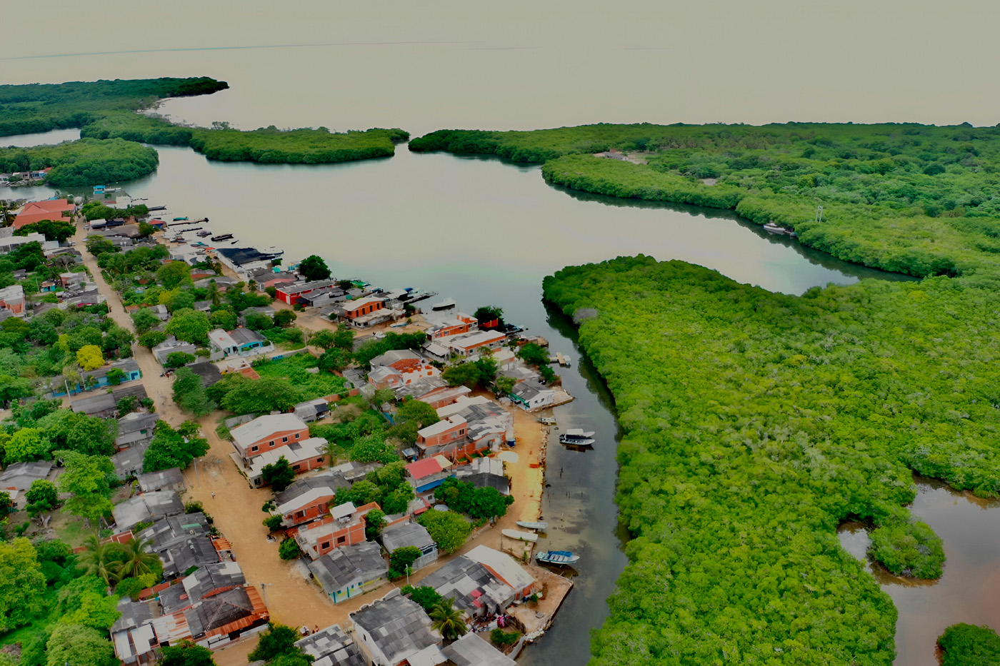
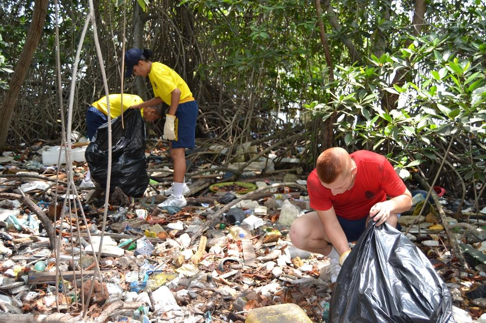
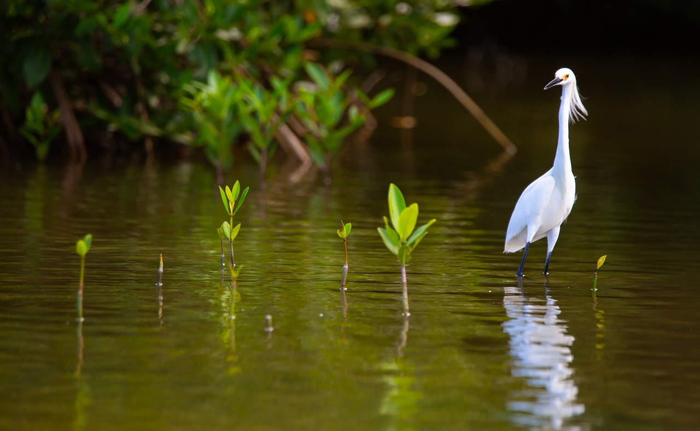

01
Deforestación
Causas y Consecuencias para el Ecosistema Local
La deforestación en Cartagena es la pérdida de bosques a gran escala, causada por actividades humanas o incendios forestales. Es un problema que afecta el medioambiente y la biodiversidad
Causas de la deforestación.
Tala de madera: La explotación de la madera para construir infraestructura turística
Construcción de obras civiles: La construcción de carreteras, muelles, y complejos para la producción de camarones
Relleno de zonas aledañas a cuerpos de agua: El relleno de zonas aledañas a cuerpos de agua sin planear el impacto negativo en el ecosistema
Depósito de residuos sólidos: El depósito de residuos sólidos en la parte superior del suelo del manglar
Obstrucción de flujos hídricos: El taponamiento de canales naturales o la colocación de terraplenes
Sedimentación: El mal manejo de las zonas altas de las cuencas hidrográficas
Erosión: Los fuertes oleajes y corrientes marinas, los huracanes, y los moluscos barrenadores de la madera
Consecuencias de la deforestación
Pérdida de hábitat críticos para muchas especies
Aumento de la erosión de las costas
Poner en peligro otros ecosistemas como los arrecifes de coral y praderas submarinas
Disminución del área de manglar y por lo tanto de la producción natural de peces, larvas, crustáceos y moluscos

02
Contaminación
Impacto en el ecosistema y la salud de las comunidades
es la presencia de sustancias o elementos dañinos en el medio ambiente (aire, agua, suelo) que afectan negativamente a los seres vivos y los ecosistemas, pudiendo ser de origen natural o humano en el caso de Los manglares de Cartagena se enfrentan a diversos tipos de contaminación, entre ellos la tala de árboles, la construcción de obras civiles, la deposición de residuos y la contaminación Por micro plásticos. También encontramos factores de contaminación como.

CONTAMINACIÓN INDUSTRIAL
La contaminación industrial también ha afectado gravemente a la bahía de Cartagena. Ha generado la concentración de altos niveles de mercurio, plomo y níquel, afectado la vitalidad de los ecosistemas acuáticos, poniendo en peligro la pesca y la calidad del agua en la región Montaño, Contaminación de la Bahía de Cartagena entra por el Canal del Dique
La contaminación industrial también ha afectado gravemente a la bahía de Cartagena. Ha generado la concentración de altos niveles de mercurio, plomo y níquel, afectado la vitalidad de los ecosistemas acuáticos, poniendo en peligro la pesca y la calidad del agua en la región Montaño, Contaminación de la Bahía de Cartagena entra por el Canal del Dique
CONTAMINACIÓN DE LOS HOGARES
En Cartagena persisten problemas de contaminación en los cuerpos de agua debido a las acciones de habitantes y comunidades que amenazan a los ecosistemas La contaminación de los canales y ciénagas de la ciudad es alarmante, y los manglares están siendo afectados por acciones humanas negativas, como rellenos con tierra, escombros y otros materiales, tala indiscriminada y vertimientos industriales, humanos y agropecuarios La contaminación ha impactado la vitalidad de las especies que habitan los manglares, y se ha observado una disminución en su capacidad de adaptarse o superar el impacto ambiental.
En Cartagena persisten problemas de contaminación en los cuerpos de agua debido a las acciones de habitantes y comunidades que amenazan a los ecosistemas La contaminación de los canales y ciénagas de la ciudad es alarmante, y los manglares están siendo afectados por acciones humanas negativas, como rellenos con tierra, escombros y otros materiales, tala indiscriminada y vertimientos industriales, humanos y agropecuarios La contaminación ha impactado la vitalidad de las especies que habitan los manglares, y se ha observado una disminución en su capacidad de adaptarse o superar el impacto ambiental.
01
El Manglar
¿Que es?
Los manglares son ecosistemas de pantano, dominados por árboles leñosos llamados mangles que se ubican en litorales tropicales de suelo plano y fangoso, y aguas tranquilas (estuarios, bahías, ensenadas, lagunas costeras, etc.)

La palabra mangle procede de los indígenas guaraní y significa “árbol retorcido” (CONAFOR, 2009), se refiere principalmente a la especie Rizópoda mangle que tiene raíces en forma de zancos que se sumergen en el agua y que asociados a ellos tienen gran diversidad de fauna y flora.
Los mangles pueden vivir en el agua y en la tierra (anfibias) y tienen adaptaciones en sus raíces, hojas y tronco, con los que pueden crecer en terrenos inestables, sin oxígeno e inundados con agua de mar (Sánchez et al., 2000). Las raíces de los mangles son muy importantes, le permiten a la planta captar el oxígeno y tienen estructuras especiales en los tallos y hojas que les ayudan a expulsar el exceso de sal que absorben desde la raíz.